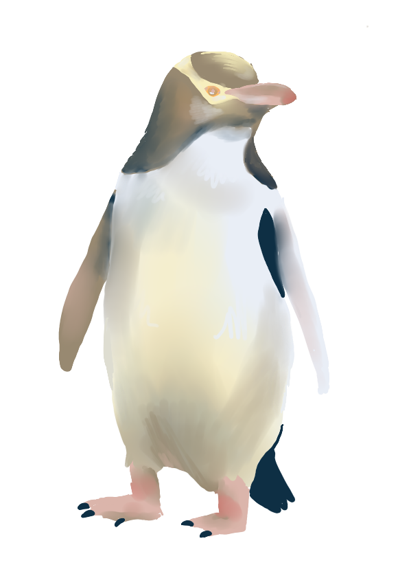

Hello!
Welcome to my penguin website!
In case you’ve never heard of a penguin before, a penguin is a
flightless bird which generally lives in cold areas. There are 18
different types of penguins, which come in many shapes and sizes,
but they all have a few things in common: As mentioned, penguins
don’t fly, they soar through the water using their flippers instead
of wings. Their “tuxedo-look” is actually camouflage against
creatures looking both above amd below at them. Beyond that,
penguins are carnivorous, meaning they only eat meat. Penguins have
garnered a lot of attention throughout the years, because of their
frankly adorable nature and appearances. Keep going to learn more!

While you may think Penguins only live in Antarctica and New Zealand, Penguins live in many different environments. Penguins can be found in places far warmer, such as Africa and the Galapagos. Penguins populate the Southern Hemisphere from east to west, but only the Southern Hemisphere. Have a look at most of the species!
Galapagos Penguin
The Galapagos Island
Humbolt Penguin
Chile
Magellanic Penguin
Argentina
King Penguin
Antarctica
Emperor Penguin
Antarctica
Macaroni Penguin
Subantarctic
to the Antarctic Peninsula
African Penguin
South
Africa
Adelie Penguin
Antarctica
Gentoo Penguin
Antarctica
Rockhopper Penguin
Macquarie Island
Royal Penguin
Macquarie
Island
Erect Crested Penguin
New Zealand
 Little Blue Penguin
Little Blue Penguin
New
Zealand
Yellow-eyed Penguin
New
Zealand
Below is a little look at some of the chicks in their derpy glory. Baby penguins, from egg to chick, are well looked after because the climates they are raised in are often unforgiving. Once hatched, baby penguins don’t have the proper feathers yet to regulate their body temperature, so they can’t be away from their parents long. Chicks can mature in as short as two months (African Penguin), to as long as three years (Emperor Penguin), depending on the species.